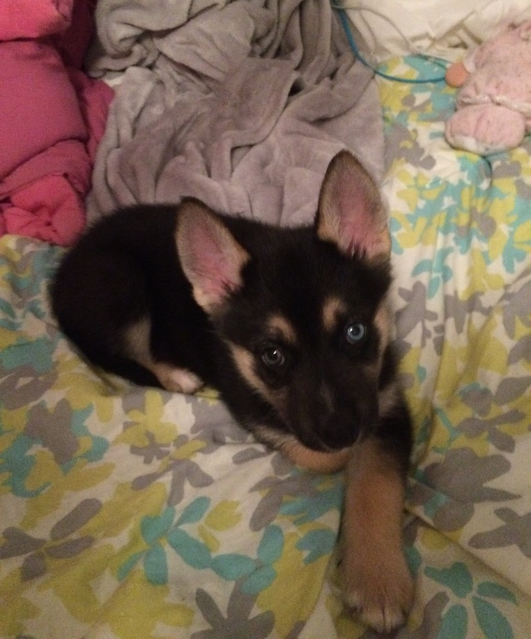
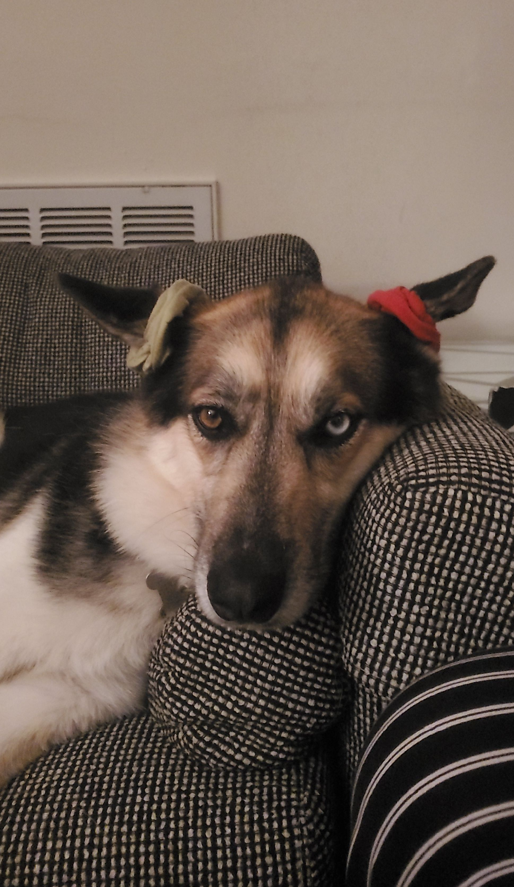
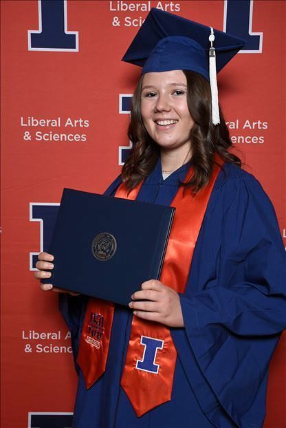

About Me
Hello, I'm Julie! 👋 Welcome to my site!
Some of my hobbies include going to music shows, cooking, playing board games, hula hooping, painting, and watching TV. A while back, I took an interest in zen buddhism and have been practicing meditation for some time now. Another big part of my life is advocating for mental health. I strive to live a healthy, compassionate, and mindful life in hopes that I can inspire others to priortize their mental and physical wellbeing in our fast-paced, work-oriented world. 😋
Chicago Livin'
I was born and raised in central Illinois, though I am a Chicagoan at heart. I moved to the city in 2018 and have loved living here ever since. I love going to Cubs games and trying all the amazing food here.
My Roommates




Meet Kaya and Oskee. Kaya is the german-shepherd husky and Oskee Meow Meow is the tabby, named after the U of I chant "Oskee Wow Wow." They have been my little buddies since they were just a couple months old. 💛
Background
My Story

I went to the University of Illinois Champaign-Urbana for undergraduate school. I studied biology, chemistry, calculus, statistics, psychology, and neuroscience. This was also when I was first introduced to Python, deep learning, and neural networks. I received my BS in Psychology with a concentration in Cognitive Neuroscience in May 2018. I was honored to receive the Manny Donchin Award for Outstanding Student in the Cognitive Neuroscience Division and Distinction in Psychology for my research work and honor's thesis: “Turning a Blind Eye: The Impact of Individual Differences on Focused Attention."
After college, I pursed a master's degree in Measurement, Evaluation, Statistics, and Assessment at the University of Illinois at Chicago. I learned a wide array of mathematics and statistics including advanced linear regression, ANOVAs, inter-rater reliability, nonparametric modeling, and so on, and worked with many datasets throughout my educational training. After being introduced in undergraduate school, I was intrigued to learn more about programming so I also took classes in Python basics and R programming where we solved complex mathematical problems as part of the curriculum. I further developed my programming skills by engaging in self-learning and finding ways to code in my research and work-related tasks.
I started by working in research as an undergraduate and continued to work in many different labs until the end of my master's (approx 5 years). There was one project in particular that sparked a new found passion for programming and advanced statistics. I worked on an independent project looking at changes in dynamic relationships between frontal and subcortical brain regions in patients who received cognitive behavioral therapy (CBT) or selective serotonin reuptake inhibitors (SSRIs). I developed several technical skills while completing this project like using MATLAB to batch SPM analyses, FSL to create mask images, R to analyze and graphically represent data, and Python sporadically to accomplish various milestones of the project. I had hoped to pursue a PhD in computational neuroscience after my master's but decided to step back and take a break once the pandemic hit. This is just the beginning of what led me down a new trajectory.
I took an administrative position as an academic program coordinator while I decided what my next steps would be. I was very fortunate to work at an institution that allowed me to capitalize on my strengths and make data analysis, programming, and tech such an integral part of my role. I always knew it was the analytical, investigative, and methodological aspects of research that I was most drawn toward, but academia was all I knew. When I started to learn more and get more comfortable with business operations, I started to explore alternate paths I could take. This is when I discovered data science. About a year into the position, after proposing, designing, and initiating several data-driven projects, I felt I had done my part in setting a solid foundation for the program to be successful moving forward. It was time for me to follow my passion for programming and data analytics and transition into a new career.
Career Aspirations
Since I was a kid, I always loved and excelled at web design, tech, maths, problem solving puzzles, etc. which led me to think research would be a good career for me. During one of my first research positions, I struggled to learn probability and statistics so I went on to get a formal degree in statistics. As it turns out, I fell in love with statistics, especially my nonparametric stats class which I later learned was teaching me machine learning algorithms. It seems I was always headed down this path, whether I could see it or not. I want to (eventually) become a data scientist because it encompasses all the technical skills I thrive in and qualities I strive to possess. But data science, at least as it stands right now, isn't just about how good you are at advanced statistics and programming. Employers are also looking for experience in the field, excellent communication, leadership skills, collaboration, field expertise, and so much more. So, before I bite off more than I can chew, I am going to start by learning the basics of software engineering as a web developer. "Why web development?" you ask. First of all, tell me it's not fun and rewarding as hell! -- No, but in all seriousness, data scientists often rely on web developers to put their work into production so what's more powerful than a data scientist who can actually put their work into production? Not to mention, it's much easier to go from software engineer to data scientist than the other way around. Now, granted, if someone comes along and thinks I have what it takes to be a data scientist at this point in my career, I am not going to be the one to tell them no. 😉